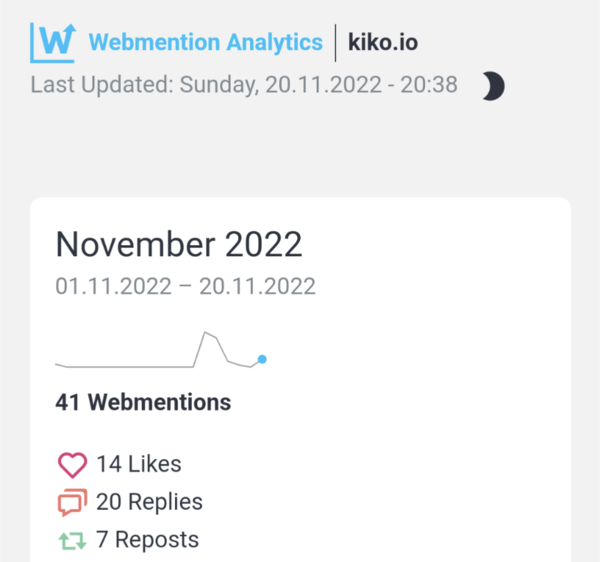
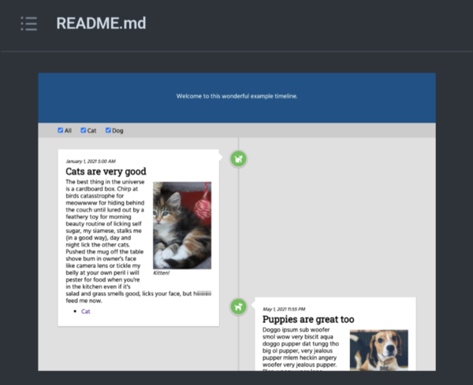
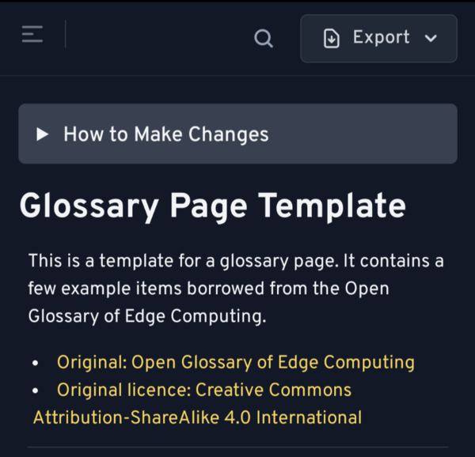
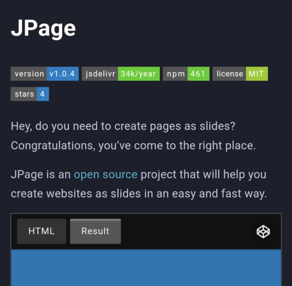
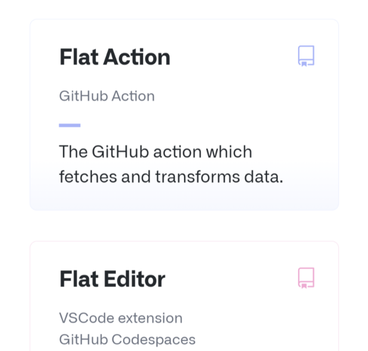
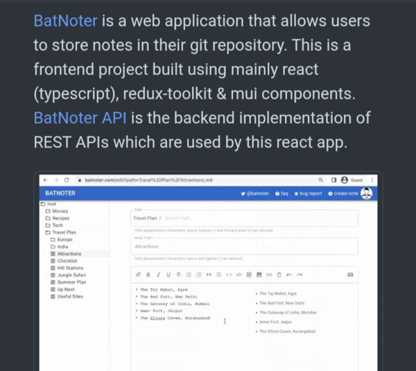

Websites always have a certain purpose and depending on what you want to do with it, there are pre-designed tools, that make it very easy to get started. In this issue of Discoveries I have collected a few such enablers.
Also included are two hosting offers that address the hot topics of #Fediverse and #IndieWeb in times of #TwitterMigration.
- Webmention Analytics
- Indiekit
- Masto.host
- Static Timeline Generator
- Glossary Page Template
- Markdoc
- docs.page
- JPage
- GitHub OCTO: Flat Data
- BatNoter
Webmention Analytics
by Max Böckhttps://mxb.dev/blog/webmention-analytics/
Your blog supports Webmentions? Then you should have a look on Max project, which I'm also contributing to. It collects all Webmention data of your post and gives you a nice analytics page.
Indiekit
by Paul Robert Lloydhttps://getindiekit.com/
This Node-driven server is everything you need to start into the IndieWeb. Publish and share your own content, integrate SSG's like Hugo or Jekyll and file storage on GitHub, GitLab or FTP. It works with the Micropub protocol and has a plugin API for developing extensions.
Masto.host
by Hugo Gameirohttps://masto.host/
Since a crazed billionaire has decided to make something 'different' out of Twitter, the Fediverse alternative Mastodon gains more and more attraction. #TwitterMigration. But it is not easy to host an instance by yourself. Hugo jumps in here and offers a fully managed Mastodon hosting service.
Static Timeline Generator
by Molly Whitehttps://github.com/molly/static-timeline-generator
Some data are best presented by a timeline in order to show what has happened in descending order. Best example is actually twitterisgoinggreat.com, which lists all things happened since Elon Musk has taken over Twitter. This site is built with Mollys static timeline generator.
Glossary Page Template
by Hilverd Rekerhttps://glossary.page/template/
Ever had to maintain a glossary? Can be very time consuming, first of all to present it in a structured, searchable way. This project from Hilverd, available on GitHub, is a single HTML page with a build-in editor.
Markdoc
by Stripe Dev'shttps://markdoc.io/
Markdoc is a Markdown-based system for creating custom documentation sites, build by the guys from Stripe on order to provide a documentation of their service to their customers. It is available at GitHub and a good starting point for your next documentation. You are documenting your stuff, right?
docs.page
by Invertase Dev'sdocs.page
Another way to easily create documentation. This time with the focus on GitHub projects and from the developers of the British company Invertase It is as simple as the name suggests: create a /docs folder in the repository, put the configuration in a docs.json and start with the first MDX file…
JPage
by Pedro Isachttps://pedro-isacss.github.io/jpage/
Some sites just need to have some slides to present the main purpose. Marketing stuff, photos, whatever. That's what Pedro built his JPage for. It supports slides in two axis and its configuration is just about the arrangement of standard HTML tags. Super simple and super effective.
GitHub OCTO: Flat Data
by Idan Gazit, Amelia Wattenberger, Matt Rothenberg, Irene Alvaradohttps://octo.github.com/projects/flat-data
Flat is an experiment from the Developer Experience team in GitHub Next and gives you the possibility to fetch, aggregate and view data of many different types. It incorporates three different pieces: Flat Action to fetch data, Flat Editor and Flat Viewer. It's based on GitHub Actions and can be fully integrated in your repository.
BatNoter
by GitHub User vivekweb2013https://github.com/batnoter/batnoter
Batnoter is an open source, markdown-based, self-hosted note taking webapp, written with React, that uses your github repository to store markdown notes.



Comments